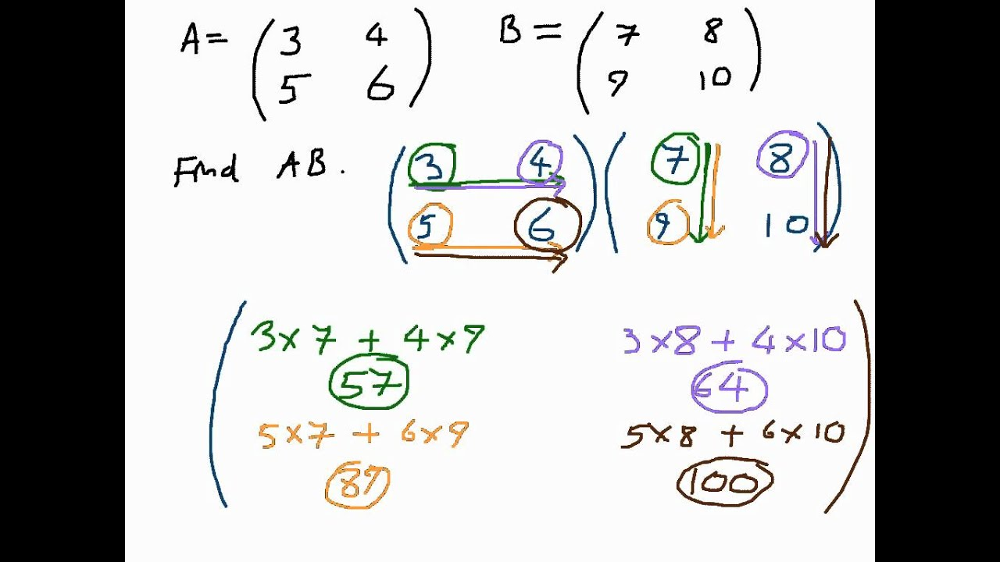

Chapter 9 Vector spaces
This is a pretty light chapter. The point of it is to define what a vector space and a basis are. These are intuitive concepts that you may already know.
9.1 The definitions of a ring and field
Prototypical example for this section: , , and are rings; the latter two are fields.
I’ll very informally define a ring/field here, in case you skipped the earlier chapter.
-
•
A ring is a structure with a commutative addition and multiplication, as well as subtraction, like . It also has an additive identity and multiplicative identity .
-
•
If the multiplication is invertible like in or , (meaning makes sense for any ), then the ring is called a field.
In fact, if you replace “field” by “” everywhere in what follows, you probably won’t lose much. It’s customary to use the letter for rings, and or for fields.
Finally, in case you skipped the chapter on groups, I should also mention:
-
•
An additive abelian group is a structure with a commutative addition, as well as subtraction, plus an additive identity . It doesn’t have to have multiplication. A good example is (with addition componentwise).
9.2 Modules and vector spaces
Prototypical example for this section: Polynomials of degree at most .
You intuitively know already that is a “vector space”: its elements can be added together, and there’s some scaling by real numbers. Let’s develop this more generally.
Fix a commutative ring . Then informally,
Moral 9.2.1 —
An -module is any structure where you can add two elements and scale by elements of .
Moreover, a vector space is just a module whose commutative ring is actually a field. I’ll give you the full definition in a moment, but first, examples…
Example 9.2.2 (Quadratic polynomials, aka my favorite example)
My favorite example of an -vector space is the set of polynomials of degree at most two, namely
Indeed, you can add any two quadratics, and multiply by constants. You can’t multiply two quadratics to get a quadratic, but that’s irrelevant – in a vector space there need not be a notion of multiplying two vectors together.
In a sense we’ll define later, this vector space has dimension (as expected!).
Example 9.2.3 (All polynomials)
The set of all polynomials with real coefficients is an -vector space, because you can add any two polynomials and scale by constants.
Example 9.2.4 (Euclidean space)
-
(a)
The complex numbers
form a real vector space. As we’ll see later, it has “dimension ”.
-
(b)
The real numbers form a real vector space of dimension .
-
(c)
The set of 3D vectors
forms a real vector space, because you can add any two triples component-wise. Again, we’ll later explain why it has “dimension ”.
Example 9.2.5 (More examples of vector spaces)
-
(a)
The set
has a structure of a -vector space in the obvious fashion: one can add any two elements, and scale by rational numbers. (It is not an -vector space — why?)
-
(b)
The set
is a -dimensional real vector space.
-
(c)
The set of all functions is also a real vector space (since the notions and both make sense for ).
Now let me write the actual rules for how this multiplication behaves.
Definition 9.2.6.
Let be a commutative ring. An - module starts with an additive abelian group whose identity is denoted . We additionally specify a left multiplication by elements of . This multiplication must satisfy the following properties for and :
-
(i)
.
-
(ii)
Multiplication is distributive, meaning
-
(iii)
.
-
(iv)
. (This is actually extraneous; one can deduce it from the first three.)
If is a field we say is an - vector space; its elements are called vectors and the members of are called scalars.
Abuse of Notation 9.2.7.
In the above, we’re using the same symbol for the addition of and the addition of . Sorry about that, but it’s kind of hard to avoid, and the point of the axioms is that these additions should be related. I’ll try to remember to put for the multiplication of the module and for the multiplication of .
Question 9.2.8
In Example 9.2.2, I was careful to say “degree at most ” instead of “degree ”. What’s the reason for this? In other words, why is
not an -vector space?
A couple less intuitive but somewhat important examples…
Example 9.2.9 (Abelian groups are -modules)
(Skip this example if you’re not comfortable with groups.)
-
(a)
The example of real polynomials
is also a -module! Indeed, we can add any two such polynomials, and we can scale them by integers.
-
(b)
The set of integers modulo , say , is a -module as well. Can you see how?
-
(c)
In fact, any abelian group is a -module. The multiplication can be defined by
for . (Here is the additive inverse of .)
Example 9.2.10 (Every ring is its own module)
-
(a)
can be thought of as an -vector space over itself. Can you see why?
-
(b)
By the same reasoning, we see that any commutative ring can be thought of as an -module over itself.
9.3 Direct sums
Prototypical example for this section: , and is the sum of its axes.
Let’s return to Example 9.2.2, and consider
Even though I haven’t told you what a dimension is, you can probably see that this vector space “should have” dimension . We’ll get to that in a moment.
The other thing you may have noticed is that somehow the , and terms don’t “talk to each other”. They’re totally unrelated. In other words, we can consider the three sets
In an obvious way, each of these can be thought of as a “copy” of .
Then quite literally consists of the “sums of these sets”. Specifically, every element of can be written uniquely as the sum of one element from each of these sets. This motivates us to write
The notion which captures this formally is the direct sum.
Definition 9.3.1.
Let be an -module. Let and be subsets of which are themselves -modules. Then we write and say is a direct sum of and if every element from can be written uniquely as the sum of an element from and .
Example 9.3.2 (Euclidean plane)
Take the vector space . We can consider it as a direct sum of its -axis and -axis:
Then .
This gives us a “top-down” way to break down modules into some disconnected components.
By applying this idea in reverse, we can also construct new vector spaces as follows. In a very unfortunate accident, the two names and notations for technically distinct things are exactly the same.
Definition 9.3.3.
Let and be -modules. We define the direct sum to be the -module whose elements are pairs . The operations are given by
and
For example, while we technically wrote , since each of and is a copy of , we might as well have written .
Abuse of Notation 9.3.4.
The above illustrates an abuse of notation in the way we write a direct sum. The symbol has two meanings.
-
•
If is a given space and and are subspaces, then means that “ splits as a direct sum ” in the way we defined above.
-
•
If and are two unrelated spaces, then is defined as the vector space whose elements are pairs .
You can see that these definitions “kind of” coincide.
In this way, you can see that should be isomorphic to ; we had , but the , , don’t really talk to each other and each of the summands is really just a copy of at heart.
Definition 9.3.5.
We can also define, for every positive integer , the module
9.4 Linear independence, spans, and basis
Prototypical example for this section: is a basis of .
The idea of a basis, the topic of this section, gives us another way to capture the notion that
is sums of copies of . This section should be very intuitive, if technical. If you can’t see why the theorems here “should” be true, you’re doing it wrong.
Let be an -module now. We define three very classical notions that you likely are already familiar with. If not, fall upon your notion of Euclidean space or above.
Definition 9.4.1.
A linear combination of some vectors is a sum of the form , where . The linear combination is called trivial if , and nontrivial otherwise.
Definition 9.4.2.
Consider a finite set of vectors in a module .
-
•
It is called linearly independent if there is no nontrivial linear combination with value . (Observe that is always true – the assertion is that there is no other way to express in this form.)
-
•
It is called a generating set if every can be written as a linear combination of the . If is a vector space we say it is spanning instead.
-
•
It is called a basis (plural bases) if every can be written uniquely as a linear combination of the .
The same definitions apply for an infinite set, with the proviso that all sums must be finite.
So by definition, is a basis for . It’s not the only one: and are other examples of bases, though not as natural. However, the set is not a basis; it fails for two reasons:
-
•
Note that . So the set is not linearly independent.
-
•
It’s not possible to write as a sum of elements of . So fails to be spanning.
With these new terms, we can say a basis is a linearly independent and spanning set.
Example 9.4.3 (More examples of bases)
-
(a)
Regard as a -vector space. Then is a basis.
-
(b)
If is the set of all real polynomials, there is an infinite basis . The condition that we only use finitely many terms just says that the polynomials must have finite degree (which is good).
-
(c)
Let . Then we expect there to be a basis of size , but unlike previous examples there is no immediately “obvious” choice. Some working examples include:
-
•
and ,
-
•
and ,
-
•
and .
-
•
Exercise 9.4.4
Show that a set of vectors is a basis if and only if it is linearly independent and spanning. (Think about the polynomial example if you get stuck.)
Now we state a few results which assert that bases in vector spaces behave as nicely as possible.
Theorem 9.4.5 (Maximality and minimality of bases)
Let be a vector space over some field and take . The following are equivalent:
-
(a)
The form a basis.
-
(b)
The are spanning, but no proper subset is spanning.
-
(c)
The are linearly independent, but adding any other element of makes them not linearly independent.
Remark 9.4.6 —
If we replace by a general module over a commutative ring , then (a) (b) and (a) (c) but not conversely.
Proof.
Straightforward, do it yourself if you like. The key point to notice is that you need to divide by scalars for the converse direction, hence is required to be a vector space instead of just a module for the implications (b) (a) and (c) (a). ∎
Theorem 9.4.7 (Dimension theorem for vector spaces)
If a vector space has a finite basis, then every other basis has the same number of elements.
Proof.
We prove something stronger: Assume is a spanning set while is linearly independent. We claim that .
Question 9.4.8
Show that this claim is enough to imply the theorem.
Let be the spanning set. Throw in : by the spanning condition, . There’s some nonzero coefficient, say . Thus
Thus is spanning. Now do the same thing, throwing in , and deleting some element of the as before to get ; the condition that the are linearly independent ensures that some coefficient must always not be zero. Since we can eventually get to , we have . ∎
Remark 9.4.9 (Generalizations)
-
•
The theorem is true for an infinite basis as well if we interpret “the number of elements” as “cardinality”. This is confusing on a first read through, so we won’t elaborate.
-
•
In fact, this is true for modules over any commutative ring. Interestingly, the proof for the general case proceeds by reducing to the case of a vector space.
The dimension theorem, true to its name, lets us define the dimension of a vector space as the size of any finite basis, if one exists. When it does exist we say is finite-dimensional. So for example,
has dimension three, because is a basis. That’s not the only basis: we could as well have written
and gotten the exact same vector space. But the beauty of the theorem is that no matter how we try to contrive the generating set, we always will get exactly three elements. That’s why it makes sense to say has dimension three.
On the other hand, the set of all polynomials is infinite-dimensional (which should be intuitively clear).
A basis of is really cool because it means that to specify , I only have to specify , and then let . You can even think of as . To put it another way, if is a -vector space we always have
9.5 Linear maps
Prototypical example for this section: Evaluation of at .
We’ve seen homomorphisms and continuous maps. Now we’re about to see linear maps, the structure preserving maps between vector spaces. Can you guess the definition?
Definition 9.5.1.
Let and be vector spaces over the same field . A linear map is a map such that:
-
(i)
We have for any .111In group language, is a homomorphism .
-
(ii)
For any and , .
If this map is a bijection (equivalently, if it has an inverse), it is an isomorphism. We then say and are isomorphic vector spaces and write .
Example 9.5.2 (Examples of linear maps)
-
(a)
For any vector spaces and there is a trivial linear map sending everything to .
-
(b)
For any vector space , there is the identity isomorphism .
-
(c)
The map by is a linear map.
-
(d)
Let be the set of real polynomials of degree at most . The map by is an isomorphism.
-
(e)
Let be the set of real polynomials of degree at most . The map by is a linear map, which can be described as “evaluation at ”.
-
(f)
Let be the set of functions . The evaluation map by is a linear map.
-
(g)
There is a map of -vector spaces called “multiply by ”; this map sends . This map is an isomorphism, because it has an inverse “multiply by ”.
In the expression , note that the first is the multiplication of and the second is the multiplication of . Note that this notion of isomorphism really only cares about the size of the basis:
Proposition 9.5.3 (-dimensional vector spaces are isomorphic)
If is an -dimensional vector space, then .
Question 9.5.4
Let , …, be a basis for . What is the isomorphism? (Your first guess is probably right.)
Remark 9.5.5 —
You could technically say that all finite-dimensional vector spaces are just and that no other space is worth caring about. But this seems kind of rude. Spaces often are more than just triples: is a polynomial, and so it has some “essence” to it that you’d lose if you compressed it into .
Moreover, a lot of spaces, like the set of vectors with , do not have an obvious choice of basis. Thus to cast such a space into would require you to make arbitrary decisions.
9.6 What is a matrix?
Now I get to tell you what a matrix is! This is fun, because now I can finally explain to you how to derive the recipes for matrix multiplication, rather than being told.
This section is so important, and also revelatory for so many students, that I’m actually going to do it twice. The first time, I’m going to work in an extremely special case, namely , using lots of numbers. (This is how I explained this concept when I taught it to first-year undergraduate students that didn’t have proof experience.) Then the second time, we’ll do it in modern language without all the numbers.
9.6.i Extended example with , suitable for the general public
Throughout this section, I’ll work specifically with , whose elements I will write as rather than (you’ll see why when I talk about matrix multiplication).
Pop quiz:
-
•
Question 1: Suppose that you’re given a linear map such that and . What are and ?
Answer 1: just add them.
-
•
Question 2: Suppose that you’re given a linear map such that and . What is ?
Answer 2:
So what this example illustrates is that the requirements on a linear map are so strong that if you just know and then you can compute the values of at any other point. That’s true for any two basis vectors (i.e., Question 1 could have been asked for inputs much nastier than the cherry-picked and , and it would still be solvable), but of course and is an especially convenient choice.
Now we can give the following definition:
Definition 9.6.1.
For a linear transform , its matrix is an encoding of obtained by gluing the column vectors
together to get a array of numbers.
For example,
Now, what happens if you apply the matrix multiplication rule from high school to the column vector ? Well, you get that
…and you can see we’re actually just doing the second pop quiz question again. So:
Moral 9.6.2 —
If is encoded as a matrix , then multiplication of with a (column) vector is defined to coincide with .
Remark 9.6.3 (The identity matrix deserves its name) —
This also gives a more natural reason why the identity matrix is rather than the explanation high school gives (namely, “well, try multiplying by it and notice you get the same thing”). If is the identity function, then , so that’s the first column of the matrix; similarly is the second column.
Now, what happens if we bring two maps and into the game, and compose them? We can do the same game with .
-
•
Question 3: Suppose that you’re given a linear map such that and . Then you’re given a second linear map such that and . What are and ?
Answer 3:
Since is itself a linear map, we now know its matrix encoding:
Now, you might have learned some matrix multiplication rule in school as a definition. If you execute that definition on the matrices for and , you should get
It’s the encoding for — indeed, you can see why, because if you trace through the work in Answer 3, it’s actually the same arithmetic being carried out.
This shows why our Napkin definition of matrix as the encoding of a linear function is better than what many of you have seen. In high school, the recipe for matrix multiplication is provided as an unnatural definition, e.g., in cute pictures like Figure 9.1. However, for us, the recipe in Figure 9.1 is a theorem: we can derive how to get the encoding of given the encodings of and .

9.6.ii General discussion, back to Napkin levels of abstraction
Let’s go back to modern language, where we work with finite-dimensional spaces over any field, and any basis of the spaces (rather than a fixed basis like in the previous section).
Pick a finite-dimensional vector space with some basis and a vector space with basis . Suppose I have a map and I want to tell you what is. It would be awfully inconsiderate of me to try and tell you what is at every point . But we saw I only have to tell you what , …, are, because from there you can work out for yourself:
Since the are a basis, that tells you all you need to know about .
Example 9.6.4 (Extending linear maps)
Let . Then .
Now I can even be more concrete. I could tell you what is, but seeing as I have a basis of , I can actually just tell you what is in terms of this basis. Specifically, there are unique such that
So rather than telling you the value of in some abstract space , I could just tell you what were. Then I’d repeat this for , , all the way up to , and that would tell you everything you need to know about .
That’s where the matrix comes from! It’s a concise way of writing down all numbers I need to tell you.
To be explicit, the matrix for is defined as the array
To drive this point home,
Moral 9.6.5 —
A matrix is the laziest possible way to specify a linear map from to .
Example 9.6.6 (An example of a matrix)
Here is a concrete example in terms of a basis. Let with basis , , and let with basis , . If I have then uniquely determined by three values, for example:
The columns then correspond to , , :
Example 9.6.7 (An example of a matrix after choosing a basis)
We again let be the vector space of polynomials of degree at most . We fix the basis , , for it.
Consider the “evaluation at ” map, a map . We pick as the basis element of the RHS; then we can write it as a matrix
with the columns corresponding to , , .
From here you can actually work out for yourself what it means to multiply two matrices. Suppose we have picked a basis for three spaces , , . Given maps and , we can consider their composition , i.e.
Matrix multiplication is defined exactly so that the matrix is the same thing we get from interpreting the composed function as a matrix, as we saw last section.
In particular, since function composition is associative, it follows that matrix multiplication is as well.
This means you can define concepts like the determinant or the trace of a matrix both in terms of an “intrinsic” map and in terms of the entries of the matrix. Since the map itself doesn’t refer to any basis, the abstract definition will imply that the numerical definition doesn’t depend on the choice of a basis.
9.7 Subspaces and picking convenient bases
Prototypical example for this section: Any two linearly independent vectors in .
Definition 9.7.1.
Let be a left -module. A submodule of is a module such that every element of is also an element of . If is a vector space then is called a subspace.
Example 9.7.2 (Kernels)
The kernel of a map (written ) is the set of such that . It is a subspace of , since it’s closed under addition and scaling (why?).
Example 9.7.3 (Spans)
Let be a vector space and be any vectors of . The span of these vectors is defined as the set
Note that it is a subspace of as well!
Question 9.7.4
Why is an element of each of the above examples? In general, why must any subspace contain ?
Subspaces behave nicely with respect to bases.
Theorem 9.7.5 (Basis completion)
Let be an -dimensional space, and a subspace of . Then
-
(a)
is also finite-dimensional.
-
(b)
If is a basis of , then there exist in such that is a basis of .
Proof.
Omitted, since it is intuitive and the proof is not that enlightening. (However, we will use this result repeatedly later on, so do take the time to internalize it now.) ∎
A very common use case is picking a convenient basis for a map .
Theorem 9.7.6 (Picking a basis for linear maps)
Let be a map of finite-dimensional vector spaces, with , . Then there exists a basis of and a basis of , as well as a nonnegative integer , such that
Moreover and .
Sketch of Proof.
You might like to try this one yourself before reading on: it’s a repeated application of Theorem 9.7.5.
Let have dimension . We can pick a basis of . Then extend it to a basis of . The map is injective over the span of (since only is in the kernel) so its images in are linearly independent. Setting for each , we get some linearly independent set in . Then extend it again to a basis of . ∎
This theorem is super important, not only because of applications but also because it will give you the right picture in your head of how a linear map is supposed to look. I’ll even draw a cartoon of it to make sure you remember:
Ψunitsize(0.7cm);
Ψreal d = 3;
Ψfilldraw(box( (-3*d/2,3.5), (-d/2,-4.5) ), opacity(0.1)+lightcyan, blue);
Ψfilldraw(box( (d/2,3.5), (3*d/2,-5.5) ), opacity(0.1)+lightred, red);
Ψlabel(scale(1.5)*"$V$", (-d,4), blue);
Ψdot("$e_1$", (-d,3), dir(180), blue);
Ψdot("$e_2$", (-d,2), dir(180), blue);
Ψlabel("$\vdots$", (-d,1), blue);
Ψdot("$e_k$", (-d,0), dir(180), blue);
Ψdot("$e_{k+1}$", (-d,-1), dir(180), blue);
Ψdot("$e_{k+2}$", (-d,-2), dir(180), blue);
Ψlabel("$\vdots$", (-d,-3), dir(180), blue);
Ψdot("$e_n$", (-d,-4), dir(180), blue);
Ψlabel(scale(1.5)*"$W$", (d,4), red);
Ψdot("$f_1$", (d,3), dir(0), red);
Ψdot("$f_2$", (d,2), dir(0), red);
Ψlabel("$\vdots$", (d,1), red);
Ψdot("$f_k$", (d,0), dir(0), red);
Ψdot("$f_{k+1}$", (d,-1), dir(0), red);
Ψdot("$f_{k+2}$", (d,-2), dir(0), red);
Ψdot("$f_{k+3}$", (d,-3), dir(0), red);
Ψlabel("$\vdots$", (d,-4), dir(0), red);
Ψdot("$f_m$", (d,-5), dir(0), red);
Ψlabel("$T$", (0,3), dir(90));
Ψdraw( (-d,3)--(d,3), EndArrow, Margin(3,3) );
Ψdraw( (-d,2)--(d,2), EndArrow, Margin(3,3) );
Ψdraw( (-d,0)--(d,0), EndArrow, Margin(3,3) );
Ψdraw( (-d,-1)--(0,-1), EndArrow, Margin(3,3) );
Ψdraw( (-d,-2)--(0,-2), EndArrow, Margin(3,3) );
Ψdraw( (-d,-4)--(0,-4), EndArrow, Margin(3,3) );
Ψlabel("$0$", (0,-1));
Ψlabel("$0$", (0,-2));
Ψlabel("$0$", (0,-4));
Ψdraw( (5.5,3)--(6,3)--(6,0)--(5.5,0));
Ψlabel("$\operatorname{im} T$", (6, 1.5), dir(0));
Ψdraw( (-5.5,-1)--(-6,-1)--(-6,-4)--(-5.5,-4) );
Ψlabel("$\ker T$", (-6, -2.5), dir(180));
In particular, for , one can write , so that annihilates its kernel while sending to an isomorphic copy in .
A corollary of this (which you should have expected anyways) is the so called rank-nullity theorem, which is the analog of the first isomorphism theorem.
Theorem 9.7.7 (Rank-nullity theorem)
Let and be finite-dimensional vector spaces. If , then
Question 9.7.8
Conclude the rank-nullity theorem from Theorem 9.7.6.
9.8 A cute application: Lagrange interpolation
Here’s a cute application222Source: Communicated to me by Joe Harris at the first Harvard-MIT Undergraduate Math Symposium. of linear algebra to a theorem from high school.
Theorem 9.8.1 (Lagrange interpolation)
Let be distinct real numbers and any real numbers. Then there exists a unique polynomial of degree at most such that
for every .
When for example, this loosely says there is a unique line joining two points.
Proof.
The idea is to consider the vector space of polynomials with degree at most , as well as the vector space .
Question 9.8.2
Check that . This is easiest to do if you pick a basis for , but you can then immediately forget about the basis once you finish this exercise.
Then consider the linear map given by
This is indeed a linear map because, well, and . It also happens to be injective: if , then , but and so can only be the zero polynomial.
So is an injective map between vector spaces of the same dimension. Thus it is actually a bijection, which is exactly what we wanted. ∎
9.9 Pedagogical digression: Arrays of numbers are evil
(This whole section is Evan yapping about how to teach linear algebra, so it can be safely skipped.)
As I’ll stress repeatedly, a matrix represents a linear map between two vector spaces. Writing it in the form of an matrix is merely a very convenient way to see the map concretely. But it obfuscates the fact that this map is, well, a map, not an array of numbers.
If you took high school precalculus, you’ll see everything done in terms of matrices. To any typical high school student, a matrix is an array of numbers. No one is sure what exactly these numbers represent, but they’re told how to magically multiply these arrays to get more arrays. They’re told that the matrix
is an “identity matrix”, because when you multiply by another matrix it doesn’t change. Then they’re told that the determinant is some magical combination of these numbers formed by this weird multiplication rule. No one knows what this determinant does, other than the fact that , and something about areas and row operations and Cramer’s rule.
Then you go into linear algebra in college, and you do more magic with these arrays of numbers. You’re told that two matrices and are similar if
for some invertible matrix . You’re told that the trace of a matrix is the sum of the diagonal entries. Somehow this doesn’t change if you look at a similar matrix, but you’re not sure why. Then you define the characteristic polynomial as
Somehow this also doesn’t change if you take a similar matrix, but now you really don’t know why. And then you have the Cayley-Hamilton theorem in all its black magic: is the zero map. Out of curiosity you Google the proof, and you find some ad-hoc procedure which still leaves you with no idea why it’s true.
This is terrible. What’s so special about ? Only if you know that the matrices are linear maps does this make sense: is just rewritten with a different choice of basis.
I really want to push the opposite view. Linear algebra is the study of linear maps, but it is taught as the study of arrays of numbers, and no one knows what these numbers mean. And for a good reason: the numbers are meaningless. They are a highly convenient way of encoding the matrix, but they are not the main objects of study, any more than the dates of events are the main objects of study in history.
The other huge downside is that people get the impression that the only (real) vector space in existence is . As explained in Remark 9.5.5, while you can work this way if you’re a soulless robot, it’s very unnatural for humans to do so.
When I took Math 55a as a freshman at Harvard, I got the exact opposite treatment: we did all of linear algebra without writing down a single matrix. During all this time I was quite confused. What’s wrong with a basis? I didn’t appreciate until later that this approach was the morally correct way to treat the subject: it made it clear what was happening.
Throughout the Napkin, I’ve tried to strike a balance between these two approaches, using matrices when appropriate to illustrate the maps and to simplify proofs, but ultimately writing theorems and definitions in their morally correct form. I hope that this has both the advantage of giving the “right” definitions while being concrete enough to be digested. But I would like to say for the record that, if I had to pick between the high school approach and the 55a approach, I would pick 55a in a heartbeat.
9.10 A word on general modules
Prototypical example for this section: is a -module of rank two.
I focused mostly on vector spaces (aka modules over a field) in this chapter for simplicity, so I want to make a few remarks about modules over a general commutative ring before concluding.
Firstly, recall that for general modules, we say “generating set” instead of “spanning set”. Shrug.
The main issue with rings is that our key theorem Theorem 9.4.5 fails in spectacular ways. For example, consider as a -module over itself. Then is linearly independent, but it cannot be extended to a basis. Similarly, is spanning, but one cannot cut it down to a basis. You can see why defining dimension is going to be difficult.
Nonetheless, there are still analogs of some of the definitions above.
Definition 9.10.1.
An -module is called finitely generated if it has a finite generating set.
Definition 9.10.2.
An -module is called free if it has a basis. As said before, the analogue of the dimension theorem holds, and we use the word rank to denote the size of the basis. As before, there’s an isomorphism where is the rank.
Example 9.10.3 (An example of a -module)
The -module
has a basis , so we say it is a free -module of rank .
Abuse of Notation 9.10.4 (Notation for groups).
Recall that an abelian group can be viewed a -module (and in fact vice-versa!), so we can (and will) apply these words to abelian groups. We’ll use the notation for two abelian groups and for their Cartesian product, emphasizing the fact that and are abelian. This will happen when we study algebraic number theory and homology groups.
9.11 A few harder problems to think about
General hint: Theorem 9.7.6 will be your best friend for many of these problems.
Problem 9A.
Let and be finite-dimensional vector spaces with nonzero dimension, and consider linear maps . Complete the following table by writing “sometimes”, “always”, or “never” for each entry.
| injective | surjective | isomorphism | |
|---|---|---|---|
| If … | |||
| If … | |||
| If … |
Use the rank-nullity theorem. Also consider the zero map.
| injective | surjective | isomorphism | |
|---|---|---|---|
| If … | never | sometimes | never |
| If … | sometimes | sometimes | sometimes |
| If … | sometimes | never | never |
Each “never” is by the rank-nullity theorem. Each counterexample is obtained by the zero map sending every element of to zero; this map is certainly neither injective or surjective.
Problem 9B (Equal dimension vector spaces are usually isomorphisms).
Let and be finite-dimensional vector spaces with . Prove that for a map , the following are equivalent:
-
•
is injective,
-
•
is surjective,
-
•
is bijective.
It essentially follows by Theorem 9.7.6.
Problem 9C.
Let’s say a magic square is a matrix of real numbers where the sum of all diagonals, columns, and rows is equal, such as . Find the dimension of the set of magic squares, as a real vector space under addition.
Problem 9D (Multiplication by ).
Let be a two-dimensional -vector space, and fix the basis for it. Write down the matrix with rational coefficients that corresponds to multiplication by . . Since and , the matrix is .
Problem 9E (Multivariable Lagrange interpolation).
Let be a set of lattice points. Prove that there exists a nonzero two-variable polynomial with real coefficients, of degree at most , such that for every .
Problem 9F (Putnam 2003).
Do there exist polynomials , , , such that
holds identically? Plug in . Use dimensions of .
Problem 9G (TSTST 2014).
††margin:Let and be arbitrary polynomials with real coefficients, and let be the degree of . Assume that is not the zero polynomial. Prove that there exist polynomials and such that
-
(i)
Both and have degree at most ,
-
(ii)
At most one of and is the zero polynomial,
-
(iii)
divides .
Interpret as for suitable , . Let be the space of real polynomials with degree at most (which has dimension ), and be the space of real polynomials modulo (which has dimension ). Then . So the linear map by has a kernel of positive dimension (by rank-nullity, for example).
Problem 9H (Idempotents are projection maps).
Let be a linear map, where is a vector space (not necessarily finite-dimensional). Suppose is idempotent, meaning for each , or equivalently is the identity on its image. Prove that
Thus we can think of as projection onto the subspace .
Problem 9I.
††margin:Let be a finite dimensional vector space. Let be a linear map, and let denote applied times. Prove that there exists an integer such that
Use the fact that the infinite chain of subspaces
and the similar chain for must eventually stabilize (for dimension reasons). Consider
For dimension reasons, these subspaces must eventually stabilize: for some large integer , and . When this happens, , since is an automorphism of . On the other hand, by Rank-Nullity we also have . Thus for dimension reasons, .